Este es un paper técnico muy extenso sobre el uso de redes neuronales convolucionales para predecir la nucleación de vacíos en microestructuras de materiales. Te haré un resumen de los puntos más relevantes y luego puedo traducir las secciones específicas que te interesen.
Resumen de Puntos Clave
Título: "Predicción de nucleación de vacíos en microestructura con redes neuronales convolucionales"
Problema Principal
Los materiales dúctiles sometidos a cargas de alta velocidad de deformación fallan principalmente por "spallation" (fractura por tensión dinámica)
La nucleación de vacíos en los límites de grano es un fenómeno crítico pero difícil de predecir
Los métodos tradicionales (experimentos, simulaciones moleculares) no capturan completamente los factores que llevan a la nucleación
Metodología Innovadora
Arquitectura de Red:
Desarrollaron una U-Net modificada con "attention gates" (puertas de atención)
Entrada multi-canal: 4 canales de orientaciones de grano + 1 canal de energía de límites de grano
Dimensiones: 100x100x5 → 100x100x1 (mapa de probabilidad de nucleación)
Dataset y Preparación:
57 micrografías post-mortem de experimentos de impacto en tantalio BCC
10,326 imágenes procesadas de microestructuras
Técnica de reconstrucción de microestructura para obtener estados "pristinos" previos al daño
Aspectos Técnicos Clave
Arquitectura de ML:
Encoder-Decoder con skip connections
- Attention gates para manejar el desbalance de clases
- Focal loss para lidiar con la escasez de píxeles de vacíos
- Leave-one-out cross validation (57 particiones)
Métricas de Evaluación:
PCC (Pearson Correlation Coefficient): Métrica conservadora que evita falsos positivos por desbalance de clases
ROI (Region of Interest): Métrica permisiva enfocada en reducir falsos negativos
Resultados Principales
Rendimiento:
PCC promedio: 0.25 para el bin más grande (100-531 píxeles de vacío)
ROI accuracy: ~70% en testing, >90% en training
El modelo predice correctamente sitios de nucleación observados Y sitios potenciales adicionales
Descubrimientos:
La nucleación puede predecirse a partir de geometría microestructural y propiedades
Los "falsos positivos" pueden representar sitios de nucleación potencial (naturaleza estocástica)
El rendimiento mejora con el tamaño de los vacíos (más píxeles de vacío = mejor correlación)
Limitaciones y Trabajo Futuro
Dataset limitado (57 micrografías experimentales)
Restricción a nucleación en límites de grano (elimina vacíos intragranulares)
Necesidad de datos 3D y condiciones de carga variadas
Incorporación de factores adicionales como puntos triples
Relevancia para tu Background
Como programador con experiencia en Python, este trabajo es particularmente interesante porque:
Demuestra aplicación práctica de deep learning en ciencia de materiales
Usa técnicas avanzadas de computer vision (U-Net, attention mechanisms)
Maneja desafíos reales como desbalance extremo de clases
Combina física de materiales con ML de manera innovadora
Features Utilizados en el Modelo
El trabajo utiliza un enfoque multi-canal con 5 features de entrada que capturan diferentes aspectos físicos de la microestructura del material.
Input Features (Variables de Entrada)
1. Orientaciones de Grano (4 canales - RGBA)
Origen de los Datos:
Obtenidos mediante EBSD (Electron Backscatter Diffraction)
Convertidos de ángulos de Euler a cuaterniones para evitar "gimbal lock"
Cada píxel representa la orientación cristalográfica local
Por qué son Relevantes:
- Orientación cristalográfica determina propiedades mecánicas locales
- Diferentes orientaciones responden distinto al estrés
- Los límites entre granos con grandes diferencias de orientación
son más susceptibles a nucleación de vacíos
Información Implícita Capturada:
Tamaño de grano: Regiones de color uniforme = granos grandes
Desorientación: Cambios abruptos de color = alta desorientación
Relación de aspecto: Forma y elongación de los granos
Textura cristalográfica: Orientaciones preferentes del material
- Energía de Límites de Grano (1 canal)
Método de Cálculo: Lattice Matching
Concepto simplificado del cálculo
γ(R₁, R₂) = γ₀(1 - c(R₁, R₂)/c₀)
donde:
- R₁, R₂: matrices de rotación de granos adyacentes
- c(R₁, R₂): función de covarianza entre redes cristalinas
- γ₀: factor de escala energético
- c₀: covarianza del estado fundamental
Significado Físico:
Mide la "incompatibilidad" entre dos granos adyacentes
Alta energía = límite menos estable = mayor probabilidad de nucleación
Incorpora los 5 grados de libertad de caracterización de límites de grano
Limitación Importante:
Solo usa información 2D (asume límites perpendiculares al plano)
Pierde información del ángulo de inclinación fuera del plano
Ground Truth (Variable Objetivo)
Mapas de Probabilidad de Nucleación
Construcción:
D(x,y) = M̃(x,y) · G̃(x,y) = (M * σ) · (G * ε)
donde:
- M: máscara de vacíos (de segmentación de imagen)
- G: energía de límites de grano
- σ, ε: desviaciones estándar para mollificación (suavizado gaussiano)
- ·: multiplicación píxel por píxel
- *: convolución
Normalización
Todas las variables escaladas al rango [0,1]
Crítico para convergencia del modelo
Equilibra la influencia relativa de cada canal
Features Implícitos Capturados
El modelo aprende automáticamente representaciones de:
Características Geométricas:
Distribución de tamaños de grano
Conectividad de límites de grano
Densidad de puntos triples
Tortuosidad de los límites
Características Cristalográficas:
Relaciones de orientación especiales (Σ3, Σ5, etc.)
Gradientes de desorientación
Patrones de textura local
Características Energéticas:
Distribución de energías de límite
Correlaciones espaciales de alta/baja energía
Interfaces preferenciales para nucleación
Limitaciones de los Features
Información Faltante:
Tensiones locales: No incluye campo de esfuerzos
Historia de deformación: No captura efectos de procesamiento
Defectos cristalinos: Dislocaciones, vacantes no modeladas
Información 3D: Efectos fuera del plano ignorados
Simplificaciones:
Asume límites perpendiculares al plano de observación
Probabilidad uniforme a lo largo de cada límite
No distingue entre diferentes tipos de puntos triples
Validación de Features
Coherencia con Literatura:
Límites de alta energía correlacionan con nucleación observada
Orientaciones perpendiculares al estrés son más susceptibles
Ciertos límites especiales (Σ3) resisten nucleación
Ablation Studies Implícitos:
Performance degrada sin información de orientación
Energía de límites de grano es predictiva por sí sola
Combinación de ambos features es superior
Innovación en Feature Engineering
Aspectos Novedosos:
Integración multi-física: Combina geometría + energética
Representación continua: Campos suaves vs. descriptores discretos
Escalabilidad: Aplicable a grandes datasets microestructurales
Ground truth sintético: Construcción probabilística de etiquetas
Comparación con Enfoques Tradicionales:
Tradicional: Descriptores manuales (tamaño grano, desorientación)
Este trabajo: Representación completa de campos microestructurales
Los features elegidos representan un balance entre completitud física y tractabilidad computacional, capturando los mecanismos fundamentales de nucleación mientras mantienen eficiencia para ML.
Figuras del Paper (20)
Sin caption
Figura en pagina 1.
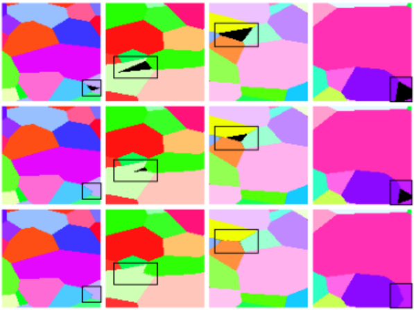
Figure 1: A reversed erosion algorithm, together with EBSD and grain boundary information, is used to reconstruct pre-damaged microstructures. (top) Samples of EBSD data showing defects resulting from the presence of voids. (middle) Erosion algorithm fills the defects until (bottom) The defect is completely filled.
Figure 1: A reversed erosion algorithm, together with EBSD and grain boundary information, is used to reconstruct pre-damaged microstructures. (top) Samples of EBSD data showing defects resulting from the presence of voids. (middle) Erosion algorithm fills the defects until (bottom) The defect is completely filled.
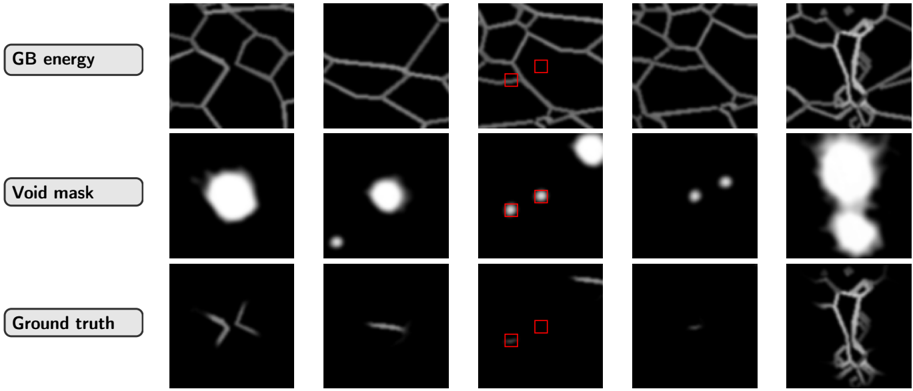
Figure 2: A visual compilation of three image sets: grain boundary energy (top row), void masks (middle row), and final ground truth images (bottom row). The final ground truth images are obtained by performing a pixel wise multiplication of grain boundary energy and void masks. The red boxes emphasize two cases: (i) when voids intersect grain boundaries, resulting in retained regions in the final mask, and (ii) when voids fall outside grain boundaries, leading to their exclusion from the final mask. This approach ensures that only voids that are on grain boundaries are preserved for further analysis.
Figure 2: A visual compilation of three image sets: grain boundary energy (top row), void masks (middle row), and final ground truth images (bottom row). The final ground truth images are obtained by performing a pixel wise multiplication of grain boundary energy and void masks. The red boxes emphasize two cases: (i) when voids intersect grain boundaries, resulting in retained regions in the final mask, and (ii) when voids fall outside grain boundaries, leading to their exclusion from the final mask. This approach ensures that only voids that are on grain boundaries are preserved for further analysis.
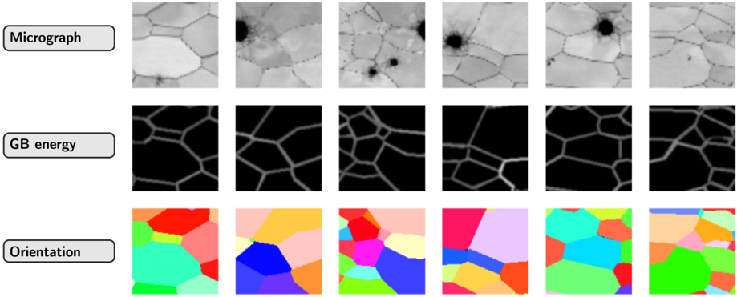
Figure 3: A visual compilation of three image sets: micrograph (top row), grain boundary energy (middle row), and grain orientation (bottom row). The dataset to the ML model includes grain orientations and grain boundary energies.
Figure 3: A visual compilation of three image sets: micrograph (top row), grain boundary energy (middle row), and grain orientation (bottom row). The dataset to the ML model includes grain orientations and grain boundary energies.
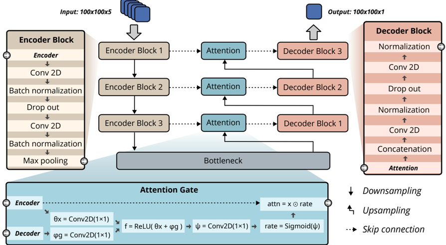
Figure 4: The full U-Net architecture, comprised of an encoder-decoder structure with attention gates between corresponding layers. The encoder processes a 100×100×5 input and the decoder reconstructs a 100×100×1 predictions. Popouts illustrate the encoder, decoder, and attention gate architectures.
Figure 4: The full U-Net architecture, comprised of an encoder-decoder structure with attention gates between corresponding layers. The encoder processes a 100×100×5 input and the decoder reconstructs a 100×100×1 predictions. Popouts illustrate the encoder, decoder, and attention gate architectures.
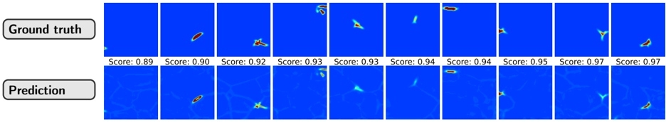
Figure 5: Representative selection of model results for training sets, indicating the robustness of the ML architecture for capturing void nucleation probability fields. Intensity values are clamped between 0.05 and 0.6 for better visualization.
Figure 5: Representative selection of model results for training sets, indicating the robustness of the ML architecture for capturing void nucleation probability fields. Intensity values are clamped between 0.05 and 0.6 for better visualization.
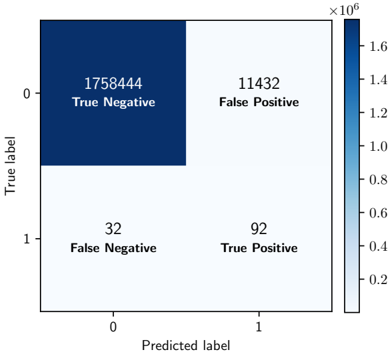
Sin caption
Figura en pagina 9.
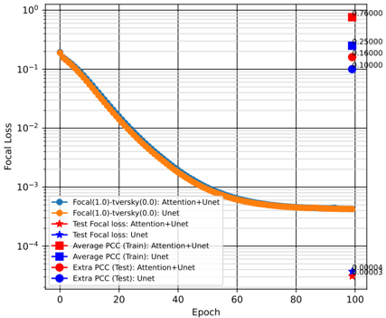
Sin caption
Figura en pagina 9.
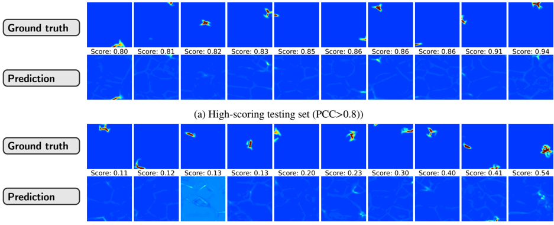
Sin caption
Figura en pagina 10.
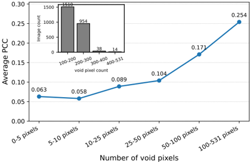
Sin caption
Figura en pagina 12.
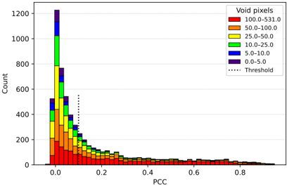
Sin caption
Figura en pagina 12.
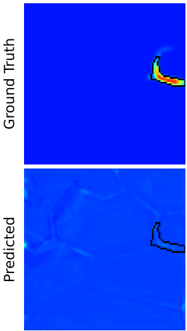
Figure 8: PCC analysis of model performance across entire dataset
Figure 8: PCC analysis of model performance across entire dataset
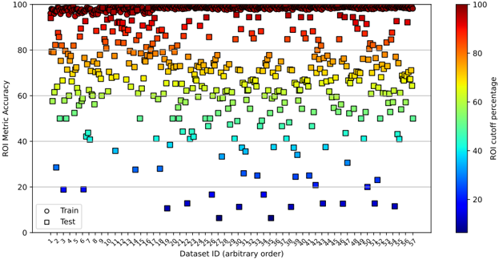
(a) Graphical illustration of ROI metric: the region of interest around a void is projected onto the predicted image.
(a) Graphical illustration of ROI metric: the region of interest around a void is projected onto the predicted image.
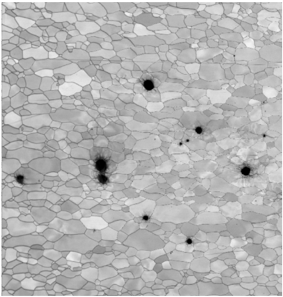
Sin caption
Figura en pagina 18.
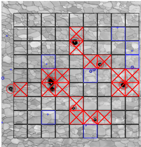
(c) Micrograph segmented into red (bad voids), blue (good voids), and black (no void regions).
(c) Micrograph segmented into red (bad voids), blue (good voids), and black (no void regions).
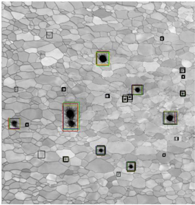
Sin caption
Figura en pagina 18.
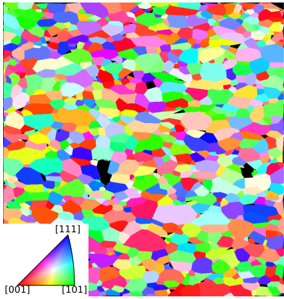
Sin caption
Figura en pagina 18.
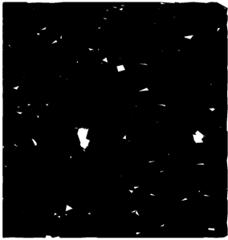
(f) Mask applied to the microstructure to highlight regions of voids
(f) Mask applied to the microstructure to highlight regions of voids
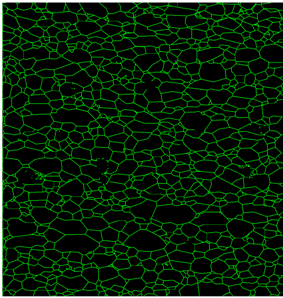
Sin caption
Figura en pagina 18.
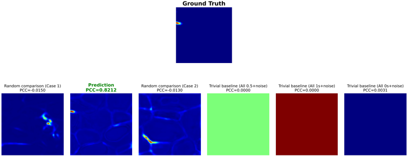
Figure 11: Pearson correlation coefficient based comparison between the ground truth and predicted void nucleation fields. The reference ground truth image is shown in the top row indicating the baseline against which all comparisons are made. The bottom row presents various predicted images, each annotated with its corresponding PCC value. The predicted field corresponding to the ground truth reference yields the highest correlation values as showm in green, while random predictors (such as constant fields of ones, zeros, or 0.5 values) exhibit significantly lower PCC values, underscoring their lack of structural correspondence. This shows that PCC is stringent as compared many other metrics which can give a false impression that the model predicts well even in cases where it does not do well.
Figure 11: Pearson correlation coefficient based comparison between the ground truth and predicted void nucleation fields. The reference ground truth image is shown in the top row indicating the baseline against which all comparisons are made. The bottom row presents various predicted images, each annotated with its corresponding PCC value. The predicted field corresponding to the ground truth reference yields the highest correlation values as showm in green, while random predictors (such as constant fields of ones, zeros, or 0.5 values) exhibit significantly lower PCC values, underscoring their lack of structural correspondence. This shows that PCC is stringent as compared many other metrics which can give a false impression that the model predicts well even in cases where it does not do well.